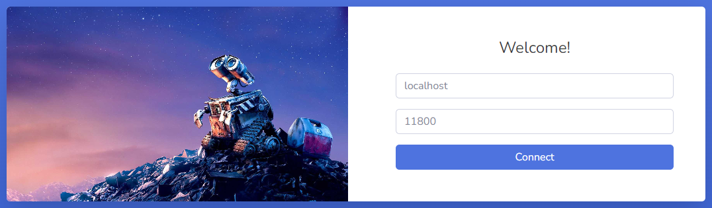
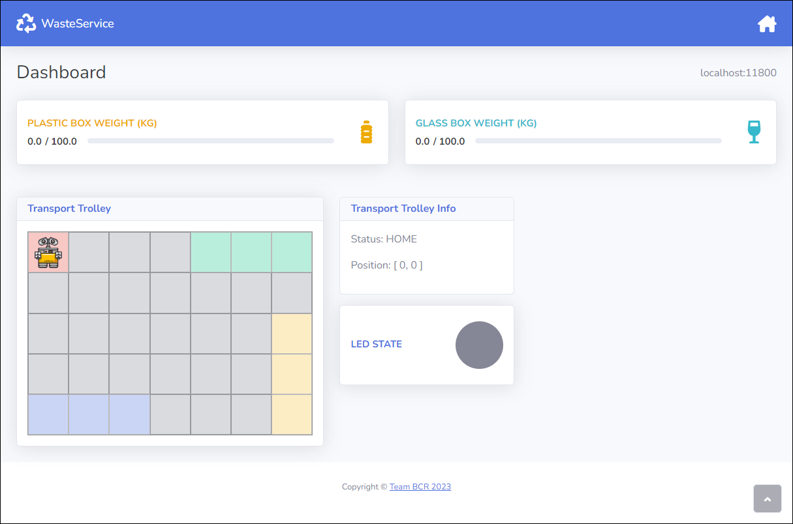
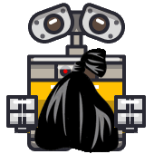
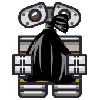
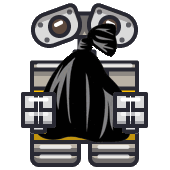

Project
The project contains all the software out team developed to achieve the Sprint3 SCRUM goal. We divided our work in 2 sub-sprints:- Sprint3.1 WasteService Core;
- Sprint3.2 WasteService GUI;
Logical Architecture
-
WasteService Core  QAK model: wasteservice_core.qak
QAK model: wasteservice_core.qak
-
WasteService RPi  QAK model: wasteservice_rpi.qak
QAK model: wasteservice_rpi.qak
Sprint3.1: WasteService Core
We upgraded theActors Changed
WasteService
The WasteService actor already keeps track of the current state of the containers. Therefore, we updated the state that occurs when a deposit action is completed (after the TransportTrolley quits the DUMP state) by making it forward to the StatusController the curret state of the container that has changed.
State state_deposit_completed {
// Update the actual storage counter
[#
WasteService.addToStorage(RequestedWasteType, RequestedWasteWeight)
WaitingDeposit = false
val CurrAmount = WasteService.getCurrentStorageForWasteType(RequestedWasteType)
#]
// Update Storage
forward status_controller -m update_ws_storage: update_ws_storage($RequestedWasteType, $CurrAmount)
}
Goto state_idle
PathExecutorBCR
As discussed during the Problem Analysis, the only actor that knows the actual position of the robot in the room is the PathExecutorBCR. Therefore, we edited the state that updates the map and from there we forward the current new position to the StatusController.
State state_do_move {
[#
plannerBCR.updateMap(CurMoveTodo, "")
#]
delay 350
// Update Trolley Position
[#
val X = plannerBCR.get_curPos().first
val Y = plannerBCR.get_curPos().second
#]
forward status_controller -m update_trolley_position: update_trolley_position($X, $Y)
}
Goto state_do_move_forward if [# CurMoveTodo == "w" #] else state_do_move_turn
TrolleyStateProvider
Since we already modeled this actor so that it propagates the current state of the TransportTrolley to the entire system by the use of an event, we didn't have to make any changes to it: we just needed to add a new guard to handle it, inside the StatusController.New Actor
StatusController
To update the GUI we introduced a new actor called "StatusController" in WasteService Context, whose purpose is to receive updates about some components and propagate the new status of the system to the GUI.In particular, it remains idle until it receives an update from any part of the system. When the change is detected, it updates the current status and subsequently sends it to the GUI. We also introduced a new message
get_data(_)
that directly triggers a GUI update.
State state_idle {
}
Transition t0 whenMsg update_ws_storage -> state_update_storage
whenEvent trolley_state_changed -> state_update_led
whenMsg update_trolley_position -> state_update_tt
whenMsg get_data -> state_update_gui
System Status
StatusUpdate
To keep track of the information about the system, we created a new classStatusUpdate.
This class represents a snapshot of the system in a certain instant of time.
Data Exchange
To send the StatusUpdate to the GUI, we decided to adopt JSON as a format. As per the MapEditor we used Gson library to parse the class into a JSON string: for this purpose we created a class StatusUpdateParser which exposes 2 static methods to obtain the StatusUpdate object from a JSON string, and viceversa.To send the updated status to the GUI, we used a CoAP message:
State state_update_gui {
println("[StatusController] Sent a new update for the GUI.")
updateResource [# wasteservice.gui.StatusUpdateParser.toJsonString(status) #]
}
Goto state_idle
Sprint3.2: WasteService GUI
To develop this project we chose Spring Boot, an open-source Java-based framework built on top of the Spring framework, that simplifies the process of building and deployment of web applications. We chose Spring Boot principally for its core feature:
- it provides easy and fast configuration, through a convention-over-configuration approach, which allowed us to focus on the application core features;
- it comes with an HTTP embedded web server which simplifies the deployment process;
- it provides a great collection of plugins to develop and test, using Gradle;
- it allows to build a microservices architecture by breaking down the application into small, independent components that can be deployed and scaled separately;
Project Setup with Sprring Initializr (IntelliJ IDEA)
To setup the project we followed those steps:- Open IntelliJ IDEA and click on "Create New Project" on the welcome screen.
- In the "New Project" dialog, select "Spring Initializr" as the project type.
- Choose the project's name and location.
- Select "Java" as the desired Spring Boot language (Java, Kotlin, Groovy).
- Choose the project's packaging type (JAR) and Java version (17)
- Configure additional project settings, such as project description and author, and click "Finish."
- Configure the project's dependencies by selecting the necessary ones from the list (Spring Web, Thymeleaf).
Once the project is generated, we started coding the Spring Boot app.
Backend
To develop the project we got inspired by the software provided by the customer webRobot22 from which we have recycled some code:IWsHandler Interface
public interface IWsHandler {
void sendToAll (String message);
}
UtilsStatusGUI
That class provides utility static methods to enstablish a CoAP connection and a TCP connection. We edited it to make it suitable for our project (we changed context and actor name, and we changed the methods parameters to be separated IP and port).
public class UtilsStatusGUI {
private static String ctxName = "ctx_wasteservice";
private static String actorName = "status_controller";
private static Interaction2021 conn;
private static Interaction2021 connTCP;
public static CoapConnection connectWithUtilsUsingCoap(String ip, int port) {
// [...]
}
public static void connectWithUtilsUsingTcp(String ip, int port){
// [...]
}
public static void sendMsg() {
// [...]
}
}
The file
application.properties
stores key-value properties for the Spring Boot application. Its purpose is to provide
a centralized location for configuring various aspects of a Spring Boot application.
It can be used to keep the configuration settings separated from the application code,
also making it simpler to change or replace without changing all the occurrencies in the application.
We configured it as it follows:
server.port=11804
spring.application.name=webGUI
spring.banner.location=classpath:banner.txt
service.ip=
service.port=
container.led_state=OFF
container.plastic_current=0
container.plastic_max=1000
container.glass_current=0
container.glass_max=1000
container.trolley_position=
container.trolley_state=
# Cell format: x,y for each cell
room.home=0,0
room.indoor=4,0,4,1,4,2
room.plastic=2,6,3,6,4,6
room.glass=0,4,0,5,0,6
room.rows=5
room.cols=7
Frontend
Thymeleaf
To render the initial HTML page we employed a template engine, which allows for flexible configuration of parameters such as the grid size or the maximum capacity of plastic and glass containers: namely, the controller reads such parameters from theapplication.properties
configuration file and passes them to the template engine, which
injects them into an HTML template page and renders the final page.
This approach allows us to avoid hardcoding the parameters into the HTML page itself. In particular, we decided to use Thymeleaf as the template engine, since it integrates very well with the Spring Boot framework.
Bootstrap
We strongly believe our WebApp has to offer the best experience from any device we use. For this reason, we adopted the Bootstrap framework, which is known for its mobile-first approach and responsive design. Every design developed on Bootstrap work seamlessly across different devices and screen size. Bootstrap provides a set of pre-built HTML, CSS, and JavaScript components that can be easily integrated into web applications.Bootstrap Studio
We chose Bootstrap Studio (based on the Bootstrap framework) to develop our UX design, as it offers an intuitive and user-friendly interface that allows us to create good-looking web designs without having to write code manually. The drag and drop interface, pre-built components, and CSS styling options make it easy to create complex layouts quickly. It also provides pre-built components, templates, and snippets that can be easily customized and reused across different projects. This can significantly reduce the time and effort required to create complex designs.jQuery
We used jQuery, which simplifies web development by providing an easy-to-use API for common tasks such as event handling, animation, and AJAX calls. It is widely used to improve the efficiency of client-side scripting and HTML document traversal and manipulation, reducing the amount of code required to perform common tasks. Additionally, jQuery is flexible and can be used for a wide range of web development tasks, from creating dynamic user interfaces to making server requests and handling responses.Websockets
The most common use of Web Sockets is to facilitate communication between a server application and a browser-based application. In fact, compared to RESTful HTTP, it has the advantage of achieving two-way, real-time communication. This allows the server to send information to the client at any time, rather than forcing the client to perform polling. WebSockets use Sockets in their implementation based on a standard protocol that defines a connection handshake and a message frame.GUI Pages
Since we wanted our web application to be independent from the WasteService Core, we needed to implement a sort of lazy start.Home Page
Dashboard Page
Animations
In order to make the GUI more interactive, we created some animations for the TransportTrolley graphics:|  |  |  | ||
STOPPED |
Address Validation
To prevent the user from submitting invalid IP addresses and ports, we introduced a validation mechanism, with the following functions:
function validateConnect() {
let ipaddress = $("#ip").val()
let port = $("#port").val()
$("#connect").prop('disabled', !(validateIPaddress(ipaddress) && validatePort(port)));
return (validateIPaddress(ipaddress) && validatePort(port))
}
function validateIPaddress(ipaddress) {
if (ipaddress === "localhost")
return true
if (/^(25[0-5]|2[0-4][0-9]|[01]?[0-9][0-9]?)\.(25[0-5]|2[0-4][0-9]|[01]?[0-9][0-9]?)\.(25[0-5]|2[0-4][0-9]|[01]?[0-9][0-9]?)\.(25[0-5]|2[0-4][0-9]|[01]?[0-9][0-9]?)$/.test(ipaddress))
return true
return false
}
function validatePort(port) {
return (port > 1023 && port <= 65535)
}